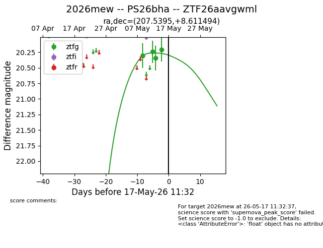
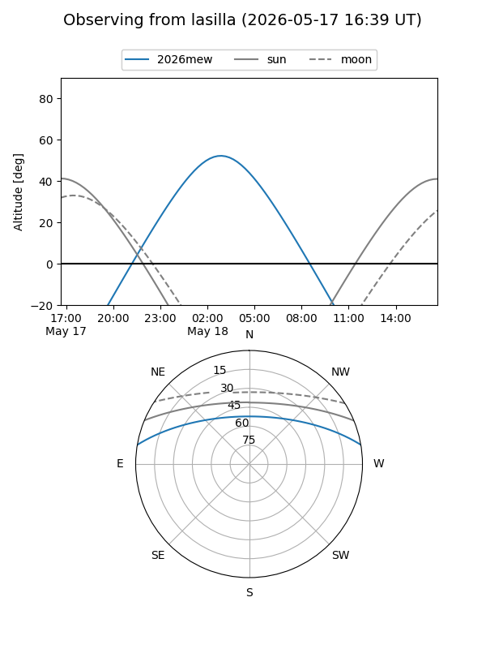
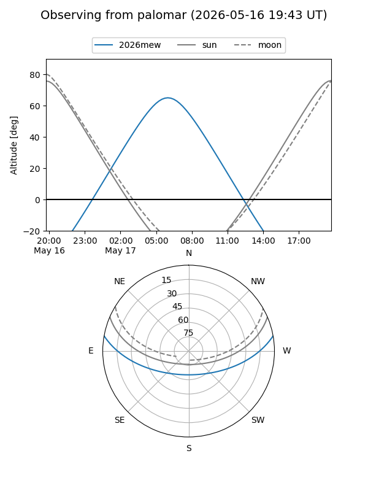
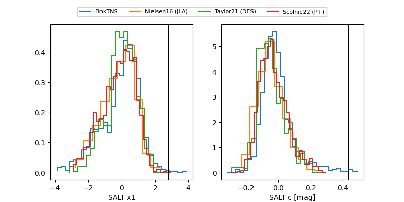

2026mew
Target 2026mew at 2026-05-17 11:35
Aliases and brokers:
FINK: link
Lasair: link
ALeRCE: link
TNS: link
YSE: link
alt names
ZTF26aavgwml (ztf,fink_ztf)
2026mew (tns,yse)
PS26bha (panstarrs)
Coordinates:
equatorial (ra, dec) = 207.5395,+8.61149
equatorial (HMS+DMS) = 13:50:09.47,+08:36:41.38
galactic (l, b) = (342.5332,+66.85394)
Flags:
Photometry:
last ztfg=20.21
4 ztfg detections
Lightcurve

Visibility


Additional plots
